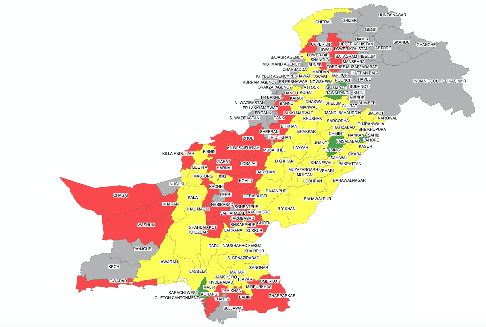

A robust "District Development Monitor (DDM)" was developed for ECD in Pakistan, which is a dynamic, flexible and real-time updated analytical tool and framework designed to facilitate the Decision Support Systems (DSS) during the various stages of project life cycle including planning, implementation, monitoring, resource allocation, scenario-based analysis, modelling and others, across all the 110 districts of Pakistan. The DDM was developed as a user-friendly tool with an excellent cross platform compatibility that makes good use of visuals to represent the results and has no requirement of any propriety software use from the user’s end. It enabled the evaluation of projects across a range of critical sectors such as infrastructure, energy, transportation, logistics, water resource management and sanitization, education, health and so forth.
Glossary of indicators and their definition comes here.